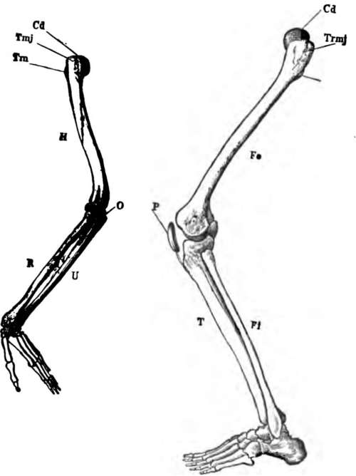
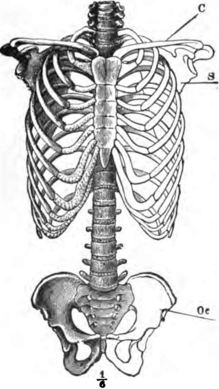
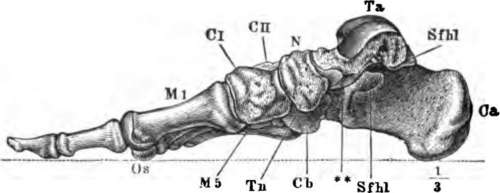

The Cranial Sutures
Description
This section is from the book "The Human Body: An Elementary Text-Book Of Anatomy, Physiology, And Hygiene", by H. Newell Martin. Also available from Amazon: The Human Body.
The Cranial Sutures
All the bones of the skull, except the lower jawbone, are immovably joined together. In the case of most of the cranial bones this occurs by a dovetailing, like that used by cabinet-makers. Each bone has its edges notched, and the notches fit accurately into hollows on the bone it articulates with ; this kind of articulation is called a suture ; it is well seen in Fig. 16, between the parietal bone and those in front of, behind, and below it.
Comparison of the upper and lower limbs and their supporting arches. The bones of these have already been enumerated, but certain resemblances and differences between the skeletons of the two limbs (Fig. 17) are worth noting. In general plan it is clear that they correspond pretty closely to one another; the pectoral arch answers to the pelvic; the humerus to the femur; the radius and ulna are represented by the tibia and fibula; five metacarpal bones correspond to five metatarsal, and fourteen phalanges in the digits of the hand to fourteen in the digits of the foot; elbow and knee-joints, and wrist and ankle are comparable. There is, however, in the arm no separate bone at the elbow answering to the patella at the knee; but the ulna bears above a bony process, O, which is in early life a separate bone and represents the patella. There are in the adult carpus eight bones, in the tarsus but seven; here again we find, however, that originally the astragalus, Ta (Fig. 19), of the tarsus consists of two bones. The elbow-joint bends ventrally and the knee-joint dorsally.
Name the unpaired face bones.
Where does each lie? Name the paired face bones. State the position of each in the skull. What bone carries the lower teeth? Which the upper? What bones form the hard palate? By what openings do the nose chambers communicate with the throat? Behind what bone do these openings lie?
What cranial bone is movable? How are most of the cranial bones joined together? Describe a suture?
Fig. 17. The skeleton of the arm and leg. H, the humerus; Cd, its articular head which fits into the glenoid fossa of the scapula; U, the ulna; R, the radius: O, the olecranon; Fe, the femur; P, the patella; Fi, the fibula; T, the tibia.
When we compare the limbs as a whole greater differences come to light, differences which are related to their different uses. The arms, serving as prehensile organs, have all their parts as movable as is consistent with the requisite strength ; the lower limbs, having to carry all the weight of the body, have their parts more firmly knit together. Accordingly we find the shoulder girdle, C, S
Do the upper and lower limbs correspond in general plan of structure ? What in the lower limb answers to the pectoral girdle ? What to the humerus ? What bones to those of the forearm ? What is the metacarpal ? Do the phalanges of the hand and foot agree in number ? What joints in the leg answer to elbow and wrist ?
What bone in the leg is not represented by a separate bone in the arm of adults? What in the arm corresponds to this leg bone? Is it ever a separate bone? Which has more bones, hand or foot? How many bones are there in the tarsus in infancy? How many afterwards unite to form one? What is the bone formed by this union named? How do elbow and knee joints differ as to the direction in which they bend?
Why are the arms made as movable as possible? Why are the lower limb bones more firmly knit?
Pig. 18, only directly attached to the axial skeleton by the ventral ends of the collar bones, and free to make considerable movements, as in "shrugging the shoulders." The pelvic girdle, Oc, on the contrary, is firmly and immovably attached to the sides of the sacrum.
Fig. 18. The skeleton of the trunk and the limb arches seen from the front. C. clavicle ; S, scapula ; Oc, innominate bone attached to the side of the sacrum dorsally and meeting its fellow at the pubic symphysis in the ventral median line.
How is the shoulder girdle united to the axial skeleton? Can it move? Give an instance? How is the pelvic attached? Is it movable?
The socket on the outer end of the shoulder-blade, with which the humerus forms the shoulder-joint, is very shallow, and allows of much freer movement than is permitted by the deeper socket of the pelvis, into which the top of the thigh bone fits.
If Ave hold one humerus tightly and do not allow it to rotate, we can still move the forearm bones so as to turn the palm of the hand up or down; no such movement is possible between tibia and fibula.
Fig. 19. The bones of the foot. Ca, Calcaneum, or heel bone; Ta, articular surface for tibia on the astragalus; Cb, the cuboid bone.
In the foot the bones are much less movable than in the hand, and are so arranged as to make a springy arch (Fig. 19) which bears behind on the heel bone, Ca, and in front on the far ends, Os, of the metatarsal bones; over the crown of the arch at Ta is the surface with which the leg-bones articulate, and on which the weight of the body bears when we stand.
Which is deeper, the socket on shoulder-blade for humerus, or on pelvic girdle for femur?
Can the foot be turned round so as to bring its sole upwards? Can the hand so as to bring the palm up?
Are the hand or the foot bones more movable? How are the foot bones arranged? On what points does the arch of the foot bear? On What part of the arch is the weight of the body borne?
The toes are far less mobile than the fingers, the difference between great toe and thumb being especially marked. The thumb can be made to meet each of the finger-tips, and so the hand can seize and manipulate very small objects, while this power of opposing the great toe to the others is nearly absent in the foot of civilized man. In infants, and in savages who have never worn boots, the great toe is often much more movable, though it never acts so completely like a thumb as it does in most apes, whose feet are used for prehension nearly as much as their hands. Our own toes can by practice be made much more movable than they usually are; persons born without hands have learned to write and paint with the toes.
Continue to: